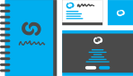

<section class="services-section">
    <h3 class="text-center">What I Do</h3>
    <div class="row">

        {% for i in (1..4) %}

        <div class="col-6 col-md-3 service-container">
            <div class="card service-card id-{{i}}">
                <div class="card-img">
                    
                </div>
                <div class="card-body">
                    <h5 class="card-title">
                            {% if i == 1 %}Brand Identity{% endif %}
                            {% if i == 2 %}User Experience{% endif %}
                            {% if i == 3 %}Web Development{% endif %}
                            {% if i == 4 %}Graphic Design{% endif %}
                    </h5>
                </div>
            </div>
        </div>

        {% endfor %}
    </div>
    <p>I really enjoy dipping my toes into whichever technologies are necessary to reach a satisfying solution. Across various hobby projects and creative pursuits, I've also worked with 3D Modelling, Video Editing, Pixel Art, and Photography amongst many others.</p>
    <p>For some examples of my professional work, visit the <a class="link link-blue" href="{{ '/projects' | relative_url }}"" >Projects</a> section.</p>

</section>

{% include currently.html %}
